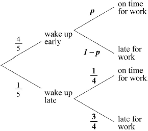

* This question is from an exam for a previous syllabus, and may contain minor differences in marking or structure.
 (A1)(A1) (C2)
Note: Award (A1) for each correct pair of probabilities.
[2 marks]
(A1)(ft)(M1)(M1)
Note: Award (A1)(ft) for two correct products from part (a), (M1) for adding their products, (M1) for equating the sum of any two probabilities to .
(A1)(ft) (C4)
Note: Award the final (A1)(ft) only if . Follow through from part (a).
[4 marks]